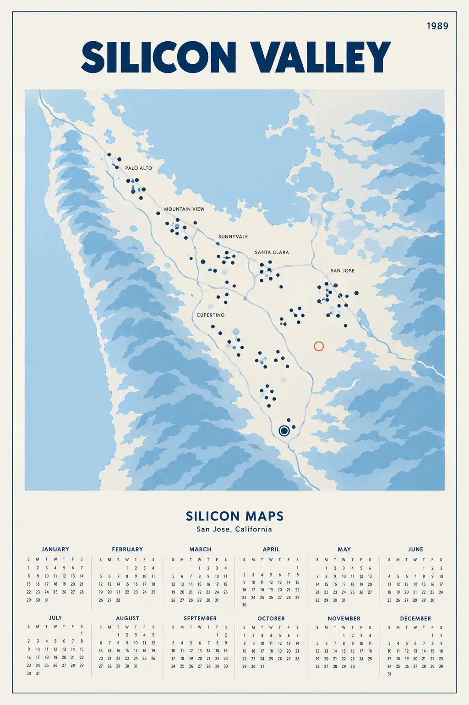
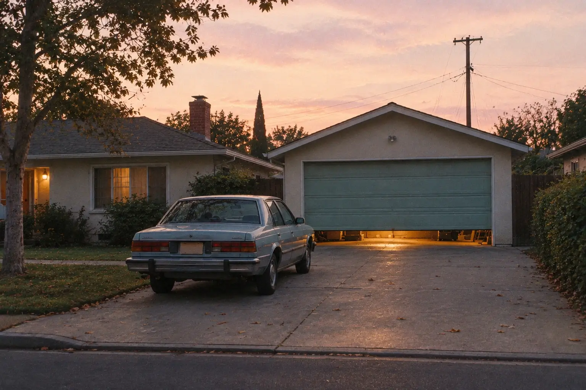
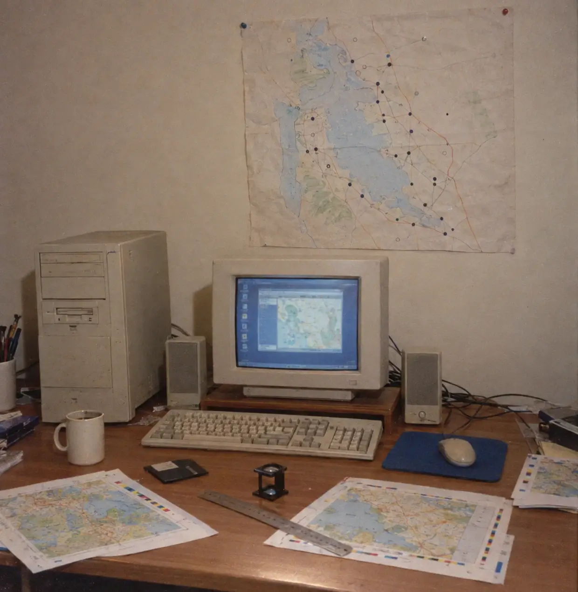
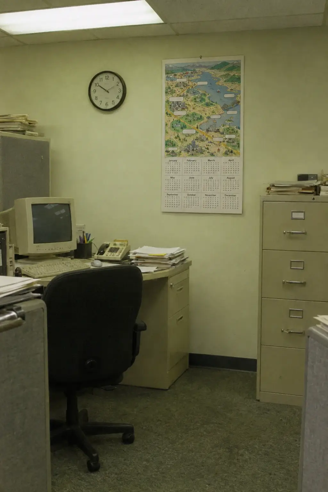
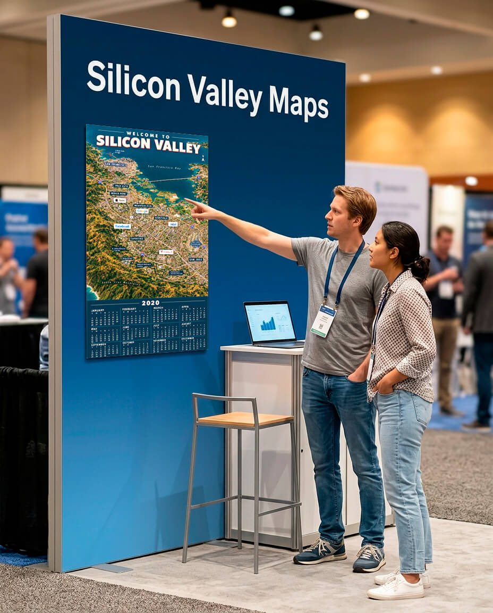
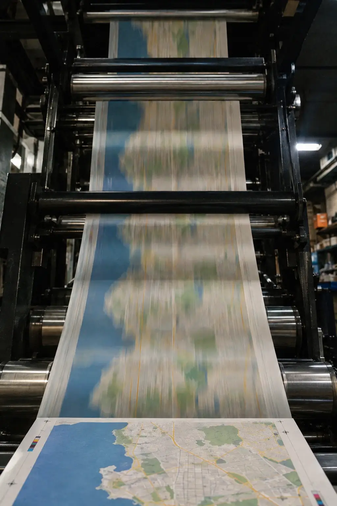

More than a map. A piece of Silicon Valley history.
For over 30 years, Silicon Maps has documented the companies that shaped technology. To appear here is to belong to the story.

From 1989 to today.
The story of Silicon Valley, drawn one company at a time.
Technology · Life sciences · Regional industries
-
Origin
Companies were starting in garages and spare rooms across San Jose. We began with a simple idea: draw it all on one map.

The first garage San Jose, 1989 -
Paper to pixels
The internet arrived, and the valley filled with new companies faster than we could draw them. Design moved from paper to pixels: maps that once took days of hand-drawn lines could be redrawn in an afternoon. We drew as fast as they dreamed.

Paper and pixels Home studio, 1990s -
A connected industry
The dot-com bubble burst and some companies disappeared. The ones that stayed kept building, and we stayed with them. New sectors joined our maps, and the maps moved to the web, with zoom, dragging and clicks, while still hanging in offices everywhere.

A map on every wall Client office, 2000s -
Flat, fast and everywhere
The valley outgrew its borders: new campuses rose in Menlo Park and Cupertino, startups filled San Francisco, and new hubs appeared across the country. Interfaces went flat and maps became drawings that adapt at any zoom. We redrew ours for every screen and every new place, and every line still starts with a pencil.
Still drawn in pencil Studio, 2010s -
The map continues
Artificial intelligence has made the industry global. People from every region now gather to build on what began in the valley, and one company became the first in the world worth more than five trillion dollars. We drew the valley for decades. Now the map goes where the industry goes.
The map goes global Tech conference, 2026
A map that stays in the room.
An ad ends when the campaign does. A printed map lives on walls and desks for years, in offices, lobbies and event halls, where the people you want to meet pass by every day.
See how it works
"Growing up in the 90s, I remember visiting my dad's company and seeing the iconic map."
Companies that belong here.
"Seeing our name drawn into the valley was the moment it felt official. Visitors find us here before we say a word."
"Our map hangs in the lobby, and partners stop to find us on it. It tells our story better than a brochure."
"We are a small regional supplier. Being drawn beside the big names on the same map says we belong in this industry."
Fictional companies and quotes, for illustration.
How you connect
How to join, in four steps.
-
Choose your placement
Pick your position and the format that fits.
-
Send your logo
Share your vector logo and placement details.
-
Approve your proof
Our art team prepares your placement for your approval.
-
Welcome to the map
Your company appears on the printed and digital map, alongside the companies already there.

Your company belongs here.
Tell us about your company and we will reply with placement options.
Talk to our team